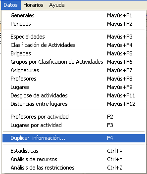
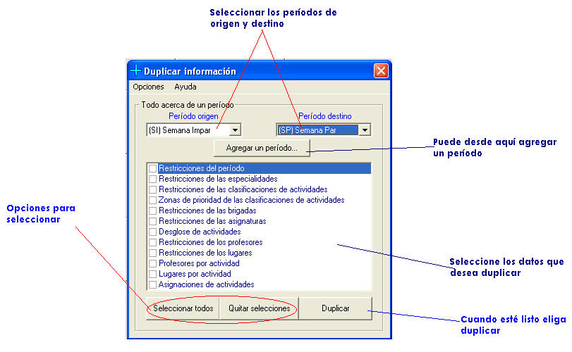

|
Duplicar información |
La siguiente herramienta del sistema está estrechamente relacionada con Redistribuir actividades. Puede ocurrir que usted necesite redistribuir actividades de un período determinado, pero desea conservar lo que tiene en su momento. Para ello puede seleccionar Duplicar información a un período nuevo, y redistribuir en este. Esto es muy útil para crear los horarios de períodos que contienen días feriados.
¿Cómo duplicar información?
Haga clic en la opción correspondiente del menú datos.

Aparecerá la siguiente ventana:

Cuando se duplica información referente a un período, se remplazan los datos del período de destino. El sistema le preguntará si está seguro. Tenga cuidado con esta herramienta, pues los cambios no se pueden deshacer, a menos que salga del sistema sin guardarlos. Se recomienda guardar antes de utilizarla.